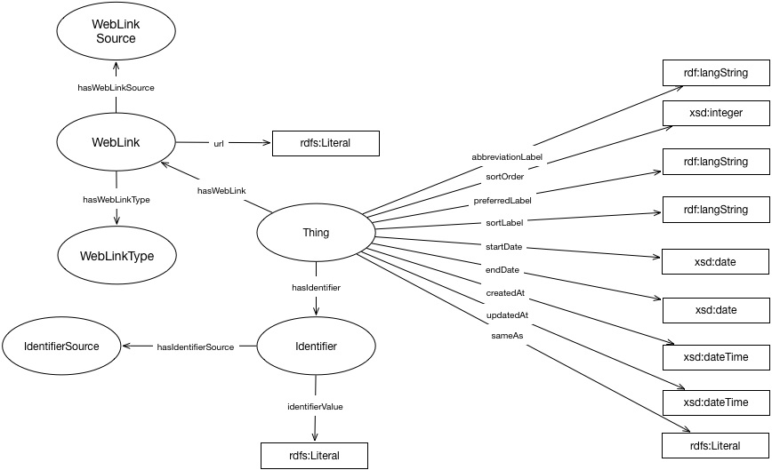

IRI: http://parliament.uk/ontologies/core/Identifier
IRI: http://parliament.uk/ontologies/core/IdentifierSource
IRI: http://parliament.uk/ontologies/core/Label
IRI: http://parliament.uk/ontologies/core/Thing
IRI: http://parliament.uk/ontologies/core/WebLink
IRI: http://parliament.uk/ontologies/core/WebLinkSource
IRI: http://parliament.uk/ontologies/core/WebLinkType
IRI: http://parliament.uk/ontologies/core/abbreviationLabel
IRI: http://parliament.uk/ontologies/core/description
IRI: http://parliament.uk/ontologies/core/hasIdentifier
IRI: http://parliament.uk/ontologies/core/hasIdentifierSource
IRI: http://parliament.uk/ontologies/core/hasLabel
IRI: http://parliament.uk/ontologies/core/hasWebLink
IRI: http://parliament.uk/ontologies/core/hasWebLinkSource
IRI: http://parliament.uk/ontologies/core/hasWebLinkType
IRI: http://parliament.uk/ontologies/core/precededBy
IRI: http://parliament.uk/ontologies/core/preferredLabel
IRI: http://parliament.uk/ontologies/core/sortLabel
IRI: http://parliament.uk/ontologies/core/abbreviationLabel
IRI: http://parliament.uk/ontologies/core/createdAt
IRI: http://parliament.uk/ontologies/core/description
IRI: http://parliament.uk/ontologies/core/endOn
IRI: http://parliament.uk/ontologies/core/identifierValue
IRI: http://parliament.uk/ontologies/core/preferredLabel
IRI: http://parliament.uk/ontologies/core/recordedEndAt
IRI: http://parliament.uk/ontologies/core/recordedStartAt
IRI: http://parliament.uk/ontologies/core/sameAs
IRI: http://parliament.uk/ontologies/core/scheduledEndAt
IRI: http://parliament.uk/ontologies/core/scheduledStartAt
IRI: http://parliament.uk/ontologies/core/sortLabel
IRI: http://parliament.uk/ontologies/core/sortOrder
IRI: http://parliament.uk/ontologies/core/startOn
IRI: http://parliament.uk/ontologies/core/updatedAt
IRI: http://parliament.uk/ontologies/core/url
This HTML document was obtained by processing the OWL ontology source code through LODE, Live OWL Documentation Environment, developed by Silvio Peroni.